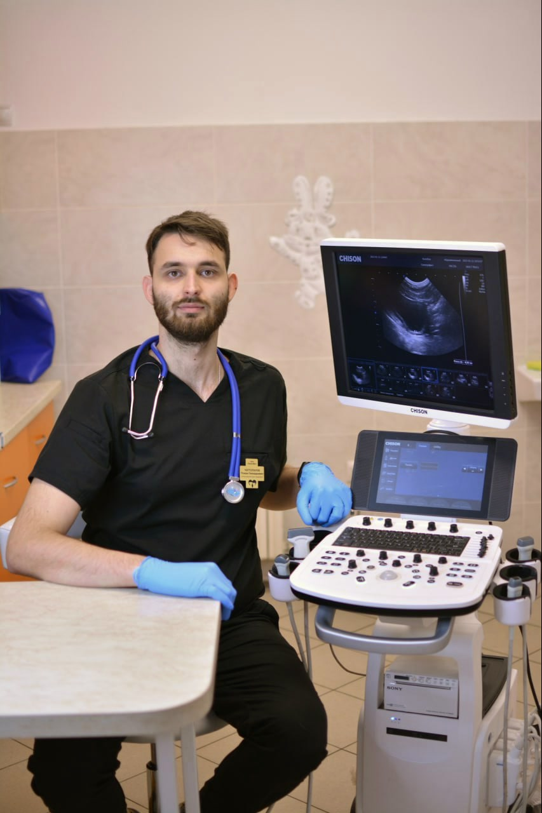

В привычной обстановке
Осмотр проходит дома, где питомцу всё знакомо. Не нужны переноска, дорога и ожидание в очереди.
Выездной ветеринарный врач · Полоцк и Новополоцк
Роман Чертопалов осматривает кошек и собак на дому — в знакомой обстановке, без переноски и очереди. Когда ехать не обязательно, консультирует онлайн.

Дома питомцу спокойнее, а вам удобнее: врач приезжает сам, осматривает животное там, где оно живёт, и объясняет, что делать дальше.
Осмотр проходит дома, где питомцу всё знакомо. Не нужны переноска, дорога и ожидание в очереди.
Кардиология, нефроурология и функциональная диагностика (УЗИ) — направления, в которых Роман работает как специалист.
Обоснованные назначения и понятные объяснения: что делаем и зачем это нужно.

Кто приедет
Помогает понять, какая помощь нужна питомцу, и объясняет, что делать дальше. Приезжает на дом и консультирует онлайн — с вниманием к животному и вашим вопросам.
Помощь кошкам и собакам
Осмотр, профилактика и назначенные процедуры — в привычной для питомца обстановке. Нужную помощь и условия выезда согласуем перед записью.
Осмотр питомца на дому, обсуждение его состояния и дальнейших действий.
цена уточняетсяПрофилактические прививки кошкам и собакам. Условия проведения уточняются заранее.
цена уточняетсяЗабор биоматериала на дому. Перечень исследований и подготовку согласуем перед выездом.
цена уточняетсяНазначенные ветеринаром процедуры и уход. Возможность выполнения дома обсуждается отдельно.
цена уточняетсяРасскажите, что беспокоит питомца, и покажите назначения или результаты обследований. Обсудим следующие шаги и необходимость очного приёма.
онлайн
От обращения до визита
Назовите город и адрес, возраст животного и причину обращения.
Уточним возможность помощи на дому, время визита и предполагаемую стоимость.
Осмотрит питомца, проведёт согласованные процедуры и объяснит дальнейшие действия.
Честно о формате
Возможности домашнего приёма ограничены: некоторые исследования и лечение требуют оборудования клиники. Перед записью обсудим, подходит ли выезд для вашей ситуации.
Куда возможен выезд
Более дальние адреса, возможность визита и стоимость дороги согласуем заранее.
Перед записью
Стоимость зависит от адреса и необходимой помощи: выезд, осмотр, процедуры, препараты и расходные материалы. Итоговую сумму и возможные доплаты обсудим перед записью.
Да. Онлайн-консультацию можно согласовать с Романом. Если ситуации нужен очный осмотр, дальнейший формат помощи обсуждается с врачом.
Ветеринарный паспорт, предыдущие назначения и результаты обследований. Подготовку к конкретной процедуре уточнит врач.
Нет. Некоторые исследования и лечение требуют оборудования клиники. Перед записью обсудите с врачом, подходит ли выезд для вашей ситуации.
Назовите город и адрес, возраст животного и причину обращения. Обсудим, подходит ли выезд или лучше начать с онлайн-консультации.